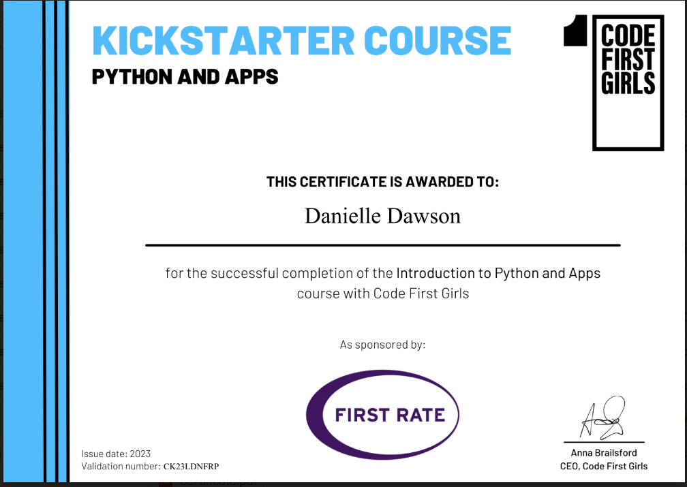

Code First Girls Degree - Software Engineering Career Pathway
I'm thrilled to share that I have been accepted into the
Code First Girls Degree program, specializing in the
Software Engineering Career Pathway! This 16-week
intensive course is an incredible opportunity to further develop my
skills and knowledge in software engineering. The program is designed
to equip women with the technical expertise and confidence needed to
thrive in the tech industry, covering key areas such as programming,
web development, databases, and more.
Although the course has just begun, I am already excited about the
journey ahead. Over the next few months, I'll be diving deep into a
comprehensive curriculum that blends theory with hands-on projects,
working alongside industry experts and like-minded peers. This
experience will undoubtedly shape my career in tech, and I can't wait
to share more updates and insights as I progress through the course.
Stay tuned for more information about my projects, what I’m learning,
and the exciting challenges I’ll be tackling as part of this program!
Kickstarter: Introduction to Python & Apps
At the end of 2023, I completed the
Introduction to Python & Apps Kickstarter course
offered by Code First Girls. This 8-week course was an incredible
experience where I learned the fundamentals of programming through
hands-on problem-solving in Python.
The course covered a wide range of topics, from object-oriented
programming and logic to collaboratively building a web application.
Here are some of the key modules:
- Module 1: Python Basics: Data Types and Variables
-
Module 2: Problem Solving: Input, Loops, and Functions with Turtle
- Module 3: Decision Making: Logic and If Statements
- Module 4: Lists and Dictionaries
- Module 5: Files, Pip, and APIs
- Module 6: Building Your App: Project Planning and Projects
- Module 7: Building Your App: Project Work Time
- Module 8: Project Presentations
The course concluded with an exciting group project where we built and
presented our own web applications. Working in a team to develop a
project from start to finish was an amazing learning experience. I had
so much fun, and it was a brilliant way to apply everything we had
learned throughout the course!

Kickstarter Course Certificate
×

Kickstarter Course Certificate